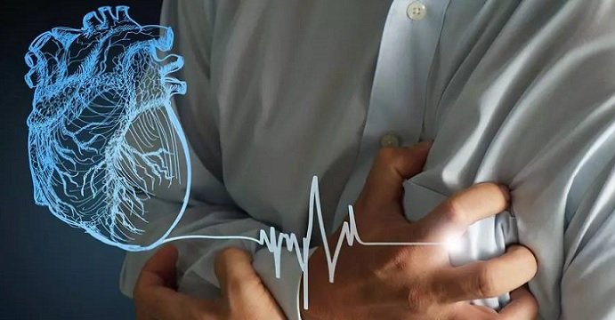

ရင္ဘတ္ေအာင့္ျခင္း ( Angina )

တစ္ခါတေလ ရင္ညႊန္႔ေနရာက အေၾကာင္းရင္းမည္မည္ရရ မရွိဘဲ ဆြဲဆုတ္ထားသလို ခံစားရတတ္ပါတယ္။
ဘာလို႔ ဒီလို ခံစားရတတ္တာလဲ?။
ဒါဟာ ခႏၶာကိုယ္ရဲ ့ အဓိကအင္ဂ်င္တစ္ခုျဖစ္္တဲ ့ နွလံုးကိုသြားတဲ ့ ေသြးေၾကာေတြ ပိတ္သြားလို႔ပါ။
နွလံုးၾကြက္သားေတြဆီ သြားတဲ့ ေအာက္ဆီဂ်င္ ျပတ္လပ္မႈ ျဖစ္တဲ့အတြက္ ရင္ဘတ္ေအာင့္ရတာ ျဖစ္ပါတယ္။
ရင္ဘတ္ေအာင့္တာက ရုတ္တရက္ ျဖစ္ေပၚတတ္ၿပီး ဒါဟာ နွလံုးေရာဂါရဲ ့ေရွ႕ေျပးလကၡဏာျဖစ္ႏိုင္ပါတယ္။
ဒီေဆာင္းပါးမွာ ဘာအတြက္ေၾကာင့္ ဒီလိုေရာဂါျဖစ္ရတယ္၊ ဘယ္လိုအရာေတြကို ေရွာင္ၾကဥ္ရမယ္ဆိုတာ ရွင္းျပပါမယ္ ။
ရင္ဘတ္ေအာင့္ျခင္း အမ်ိဳးအစားမ်ား
ရင္ဘတ္ေအာင့္တာဟာ ပံုစံမ်ဳိးစံုရွိေပမယ့္ ေအာက္ပါ အမ်ဳိးအစားေတြကေတာ့ ေဆးကုသမႈ မျဖစ္မေန ခံယူသင့္တဲ့ အေျခအေနေတြ ျဖစ္ပါတယ္။
၁။ Stable Angina
လႈပ္ရွားမႈရွိရင္ ပိုေအာင့္တတ္ပါတယ္။ အနားယူလိုက္ရင္ေတာ့ သက္သာသြားတတ္တဲ့ အမ်ိဳးအစား ျဖစ္ပါတယ္။ မိနစ္အနည္းငယ္ၾကာတဲ့အထိ ေအာင့္တတ္ပါတယ္ ။
ရုတ္တရက္နွလံုးတိုက္ခိုက္ခံရျခင္း-Heart Attack မဟုတ္ေသးေပမဲ့လည္း Heart attack ျဖစ္ဖို ့ အလားအလာရွိပါတယ္ ။ ဆရာ၀န္နဲ ့ စနစ္တက် ကုသဖို႔ လိုပါတယ္ ။
၂။ Unstable Angina
ပိုၿပီးဆိုးတဲ့အမ်ိဳးအစားပါ။ အနားယူလိုက္ရင္ေတာင္မွ မသက္သာပဲ အခ်ိန္အေတာ္ၾကာတဲ့အထိ ခံစားရတတ္ပါတယ္ ။
ရုတ္တရက္ ႏွလံုးတိုက္ခိုက္ခံရတာမ်ဳိး ျဖစ္ခါနီး အေျခအေနျဖစ္တဲ့အတြက္ အေရးေပၚကုသမွကို အျမန္ဆံုး ခံယူသင့္ပါတယ္။
ဘာေၾကာင့္ ဒီေရာဂါျဖစ္ရတာလဲ
အဓိက ကေတာ့ အေပၚမွာ ေျပာထားတဲ့အတိုင္း နွလံုးကိုသြားတဲ ့ ေသြးေၾကာေတြ ပိတ္သြားလို႔ပါ ။ တျခားျဖစ္ေစတဲ့ အေၾကာင္းအရာေတြကေတာ့-
- အဆုတ္ပင္မေသြးေၾကာႀကီး ပိတ္ျခင္း
- နွလံုးၾကြက္သား အားနည္းလာျခင္း
- နွလံုး အဆို႔ရွင္၀ က်ဥ္းလာျခင္း
- နွလံုးအိမ္ေယာင္ရမ္းၿခင္း
- ေသြးလႊတ္ေၾကာနံရံ ပါးလာကာ စုတ္ၿပဲထြက္ျခင္း တို႔ျဖစ္ပါတယ္ ။
ေရာဂါလကၡဏာေတြက ဘယ္လိုလဲ
ရင္ဘတ္ေအာင့္တာ အဓိက လကၡဏာပါ ။ လူတစ္ဦးနဲ႔ တစ္ဦးကေတာ့ မတူပါဘူး။ တခ်ဳိ႕က ရင္ညႊန္႔ကို မီးစနဲ႔ထိုးသလို ေအာင့္မယ္၊
တခ်ဳိ႕ကေတာ့ ကိုက္ခဲၿပီး ေအာင့္တတ္ပါတယ္ ။ ရင္္ဘတ္ထဲ ျပည့္က်ပ္သလို ခံစားရတတ္ၿပီး ဆြဲဆုပ္ထားသလို ခံစားခ်က္မ်ဳိးလည္း ခံစားရတတ္ပါတယ္ ။
တခါတေလ ရင္ဘတ္ေအာက္နားကေန စေအာင့္တတ္ၿပီး လက္ေမာင္း၊ ပုခံုး၊ လည္ပင္း ၊ လည္ေခ်ာင္း ၊ ေမးေစ့နဲ႔ ေနာက္ေက်ာဘက္အထိ ေအာင့္တတ္ပါတယ္ ။
ေနာက္ဆက္တြဲ အေနနဲ ့ အသက္ရွဴျမန္လာတာ၊ ေခြ်းထြက္ၿပီး မူးေ၀လာတာေတြပါ ျဖစ္တတ္ပါတယ္ ။ ဒီလို လကၡဏာေတြ ရွိလာၿပီဆိုရင္ေတာ့ ေဆးခန္း အျမန္ဆံုးျပသင့္ပါတယ္ ။
ေရာဂါရွာေဖြျခင္း
ေရာဂါရာဇ၀င္ေမးျမန္းတာနဲ ့ ကနဦး စစ္ေဆးခ်က္ေတြအျပင္ ECG , ဓာတ္မွန္တို ့ ရိုက္ရမွာပါ ။ လိုအပ္ရင္ အက္ခိုး Echo (ႏွလံုးဓာတ္မွန္) ရိုက္တာမ်ဳိးလည္း ျပဳလုပ္ေပးရပါမယ္။
ကုသျခင္း
ေရာဂါက နွလံုးကို ဘယ္ေလာက္ထိ ထိခိုက္မႈရွိလဲ ဆိုတဲ့ေပၚ မူတည္ၿပီး ကုသတဲ့ ပံုစံကလည္း ကြဲျပားပါတယ္ ။
ေရာဂါ အႏုအရင့္အလိုက္ ေသာက္ေဆးေတြမွီ၀ဲတာကေန အႀကီးစား ခြဲစိတ္မႈျပဳလုပ္ရတဲ့အထိ ကုသမႈပံုစံ အဆင့္ဆင့္ရွိပါတယ္ ။
ေသာက္ေဆးေတြ မွီ၀ဲတဲ့အခါ-
- ေသြးေၾကာက်ဥ္းတာကို တားဆီးမဲ့ေဆး၊
- နွလံုးခုန္နွဳန္း မျမန္ေအာင္ ထိန္းေဆး၊
- ေသြးေၾကာခ်ဲ႕ေဆး နဲ ့
- ေသြးက်ဲေဆး ဆိုၿပီး ဆရာ၀န္ ညႊန္ၾကားခ်က္နဲ႔အညီ ေသာက္ရမယ့္ အမ်ဳိးအစားေတြ ရွိပါတယ္။
ဒီလို ကုသနည္းေတြနဲ ့မေအာင္ျမင္ဘူးဆိုရင္ေတာ့ နွလံုးခြဲစိတ္မႈ ျပဳလုပ္ဖို႔ လိုအပ္မွာပါ ။ ကၽြမ္းက်င္တဲ့ ဆရာ၀န္ႀကီးေတြနဲ႔ တိုင္ပင္ရပါမယ္။
ဘယ္လို ကာကြယ္ရမလဲ
ဘယ္လို အေျခအေနေတြက ရင္ဘတ္ေအာင့္တာကို ပိုဆိုးေစလဲဆိုတာကို နားလည္ရင္ ေရွာင္ၾကဥ္နိုင္မွာပါ ။
စိတ္အလြန္အမင္း လႈပ္ရွားတာမ်ဳိး၊ ျပင္းထန္တဲ့ ေလ့က်င့္ခန္းေတြ လုပ္တာမ်ဳိးကို ေရွာင္ၾကဥ္သင့္သလို အစာ စားတဲ့အခါမွာလည္း နည္းနည္းနဲ ့ အႀကိမ္အရည္အတြက္မ်ားမ်ား စားသင့္ပါတယ္ ။
ေအာက္ပါ နည္းလမ္းေတြကိုလည္း စနစ္တက် လိုက္နာပါ ။
- ေဆးလိပ္ျဖတ္ပါ၊
- အဆီမ်ားတဲ့ အစာေတြကို ေရွာင္ပါ၊
- တရားထိုင္တာ၊ ေယာဂက်င့္တာေတြ ျပဳလုပ္ေပးပါ၊
- တစ္ေန႔ကို နာရီ၀က္ခန္႔ လမ္း မွန္မွန္ေလွ်ာက္ပါ၊
- ဆရာ၀န္နွင့္ ပံုမွန္ျပပါ။
Source- ေဒါက္တာ ေအာင္ျပည့္ၿဖိဳးဦး